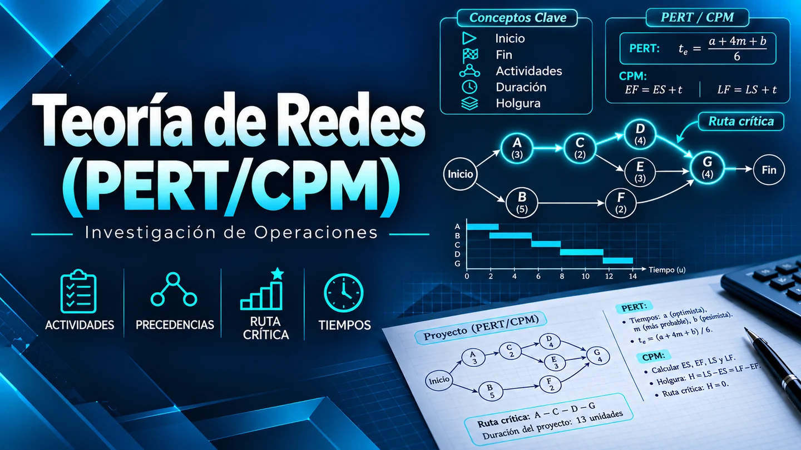

CPM: método de la ruta crítica
Usa una duración por actividad para calcular el plazo del proyecto y la holgura de cada tarea.
Módulo 3 · Investigación de Operaciones
Cómo planificar un proyecto, calcular su duración y detectar las actividades que condicionan la entrega.
Fundamentos
Una red representa cada actividad con un nodo y cada relación de precedencia con una flecha. Una ruta es una secuencia de actividades conectadas. La red permite ver qué tareas pueden ejecutarse en paralelo y cuáles deben esperar a que otras terminen.
Usa una duración por actividad para calcular el plazo del proyecto y la holgura de cada tarea.
Usa tres estimaciones por actividad cuando sus duraciones son inciertas: optimista (a), más probable (m) y pesimista (b).
En PERT se usan los tiempos esperados para recorrer la red. Si se estima la probabilidad de cumplir un plazo, el resultado depende de supuestos sobre la independencia de las duraciones y la estabilidad de la ruta crítica.
Caso práctico
En el recorrido hacia adelante, el inicio temprano (ES) es el mayor fin temprano (EF) de las predecesoras, o cero si no hay ninguna. EF = ES + duración. En el recorrido hacia atrás, se parte del fin del proyecto: el fin tardío (LF) es el menor inicio tardío (LS) de las sucesoras, y LS = LF − duración.
| Actividad | Predecesoras | Duración | ES | EF | LS | LF | Holgura |
|---|---|---|---|---|---|---|---|
| A · Definir requisitos | — | 2 | 0 | 2 | 0 | 2 | 0 |
| B · Diseñar interfaz | A | 3 | 2 | 5 | 4 | 7 | 2 |
| C · Diseñar base de datos | A | 4 | 2 | 6 | 2 | 6 | 0 |
| D · Programar interfaz | B | 5 | 5 | 10 | 7 | 12 | 2 |
| E · Programar backend | C | 6 | 6 | 12 | 6 | 12 | 0 |
| F · Integrar componentes | D, E | 3 | 12 | 15 | 12 | 15 | 0 |
| G · Pruebas y entrega | F | 2 | 15 | 17 | 15 | 17 | 0 |
La integración (F) espera a D y E. Como terminan en los días 10 y 12, F comienza el día 12 y termina el 15. G requiere dos días más.
La holgura total se calcula como LS − ES. En la ruta crítica es cero. B y D tienen dos días de holgura, pero comparten el mismo margen: sus retrasos no se pueden sumar como si fueran independientes.
PERT y CPM ayudan a ordenar permisos y obra en construcción, coordinar diseño e integración en software y planificar proveedores y montaje en eventos. Conviene recalcular la red cuando cambian las duraciones, las dependencias o la disponibilidad de personal y equipo.
